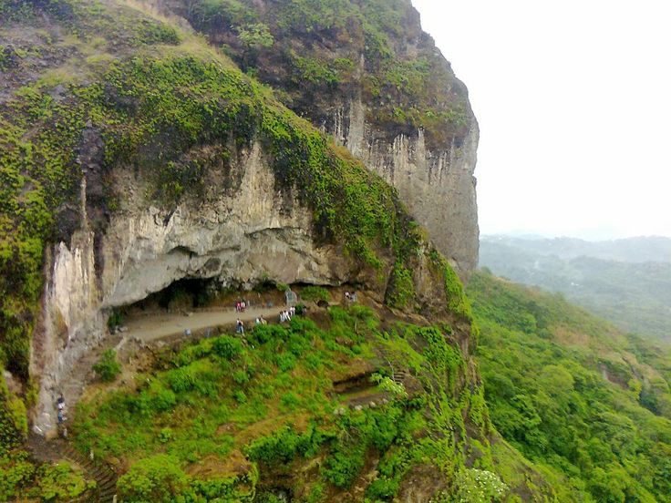

Galería


La Puerta del Diablo es un sitio turístico en El Salvador famoso por su impresionante vista y su historia llena de misterio.
Se encuentra en Panchimalco, San Salvador. Aquí puedes ver cómo llegar:
Para más información, síguenos en redes sociales o contáctanos.